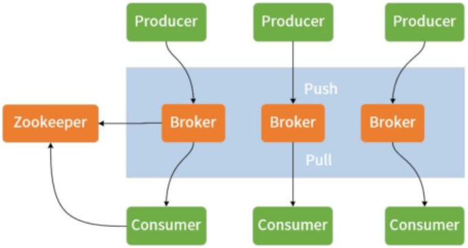
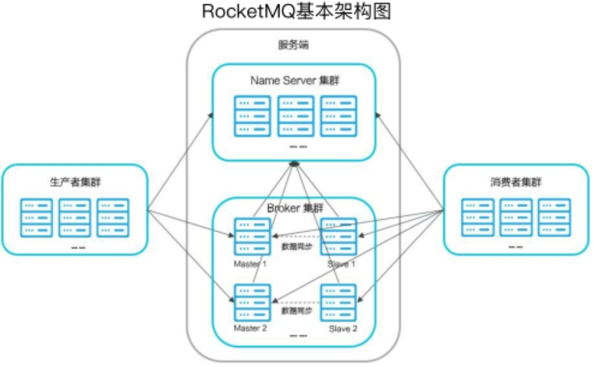

消息通信机制和中间件
消息通信机制将事件驱动架构应用到分布式服务体系
学习目标
- 消息通信机制的优势和功能特性
- 消息通信规范和消息中间件
- spring消息通信的抽象过程
目录
- 消息通信机制及实现框架
- spring消息通信解决方案
消息通信机制及实现框架
消息中间件：存储/转发消息
四大核心优势
- 分布式解耦
- 系统扩展
- 流量削峰
- 数据最终一致性
解耦
RPC架构的耦合度
- 技术耦合
双方使用的技术受限制，如Dubbo双方都需要引入Dubbo，RMI必须使用Java语言开发 - 空间耦合
方法名参数不可修改（我必须用你的接口方法名调用）
消息通信机制双方只需要识别消息即可 - 时间耦合
需同时在线，一方挂掉整体业务服务不可用
消息通信机制存储转发，可将消息先存储，服务可用后再转发
削峰
本质：延缓处理请求时机，及过滤请求，让服务端平稳处理，可节约服务器资源
消息中间件通过队列承接瞬时流量，在另一端平滑推送消息。
把同步直接调用转换为异步间接推送，缓冲瞬时流量
系统扩展
将RPC调用转换成消息事件机制
数据最终一致性
生产者保证本地事务和消息发送的原子性
消费者保证事务参与方接收消息的可靠性
消息通信的交互模式
- 一对一
Queue - 一对多
Subject主题
消息通信规范和框架
核心功能
消息发布：普通消息、顺序消息延迟消息、事务消息单向消息、批量
消息
消息消费：拉(PulI)模式消费、推(Push)模式消费、消息过滤(Filter)
JMS ActiveMQ
JMS Java Messaging Service，Java消息服务
并发量不高，集群高可用配置复杂
AMQP RabbitMQ
AMQP(Advanced Message Queuing Protocol，高级消息队列协议)
erlang开发,依赖erlang环境
Kafka
大数据，流式计算
Scala开发
消费者只拉消息
RocketMQ
java开发环境，支持事务消息，顺序消息，延迟消息，高性能，alibaba支持
spring消息通信解决方案
一套解决方案，三大组件：
- Spring Cloud Stream
- Spring Integration 系统集成、独立可用
- Spring Messaging 通信
Spring Messaging
核心对象
1 | public interface Message<T>{ |
通道(Channel)
抽象出来的业务上的名称
各个消息通信系统所特有的队列概念并不会直接暴露在业务代码中，而是通过通道来对队列进行配置
Spring Intergration
本质上是一种服务总线
Spring Integration通道:
- RendezvousChanne 阻塞式
- QueueChannel 缓存
- PriorityChannel 优先级
- DirectChannel 同一线程
- ExecutorChannel 多线程
SpringCloudStream

思考题
使用过哪些消息中间件，各有什么特色？